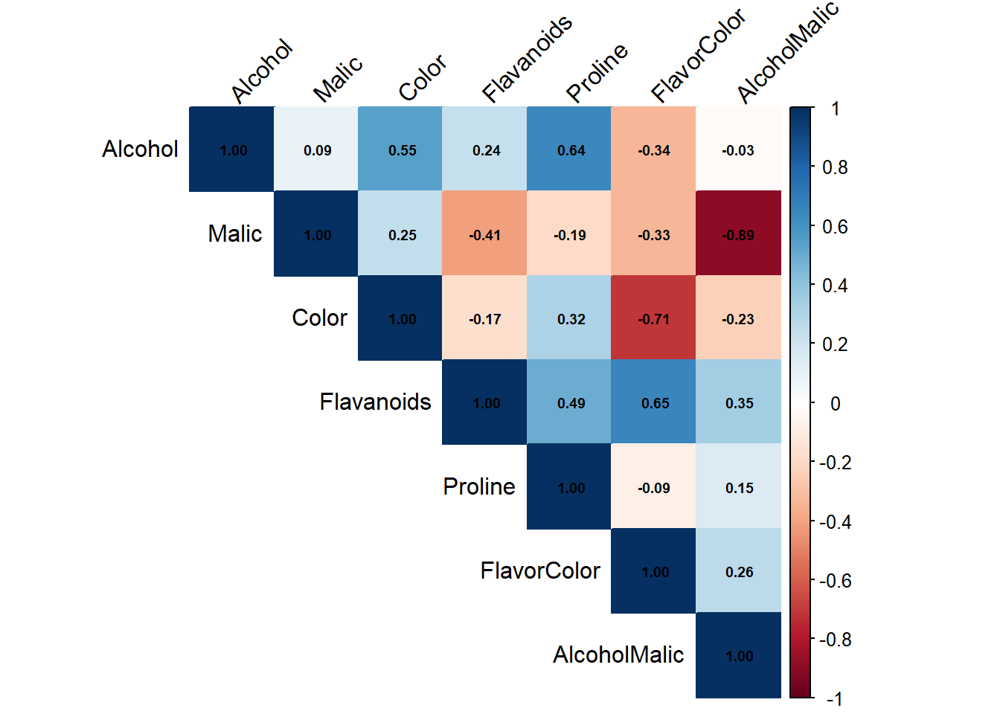
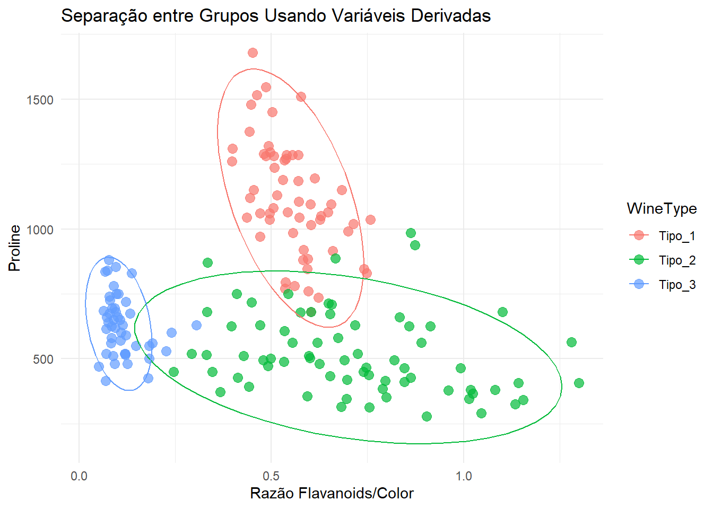
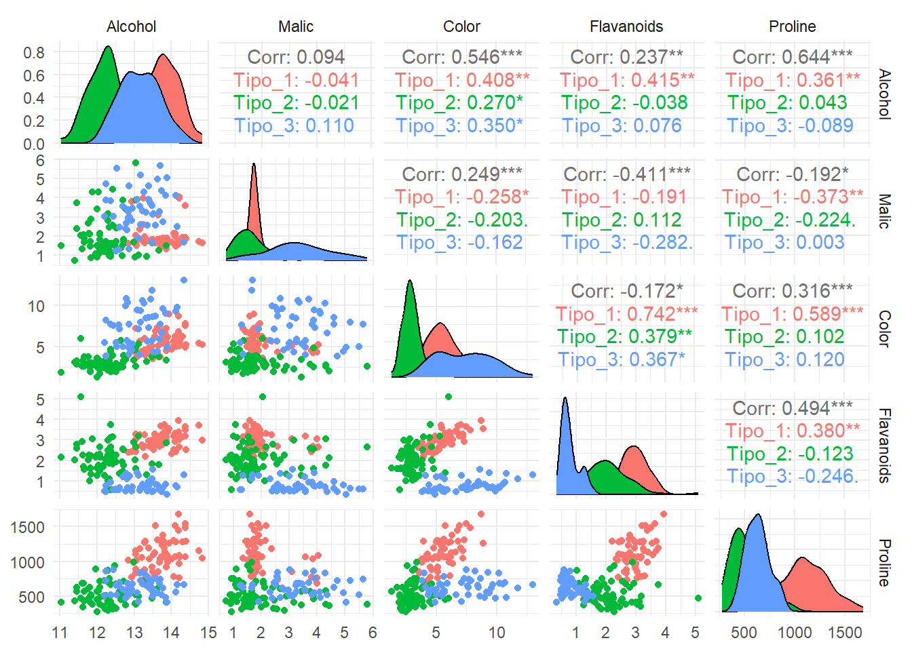
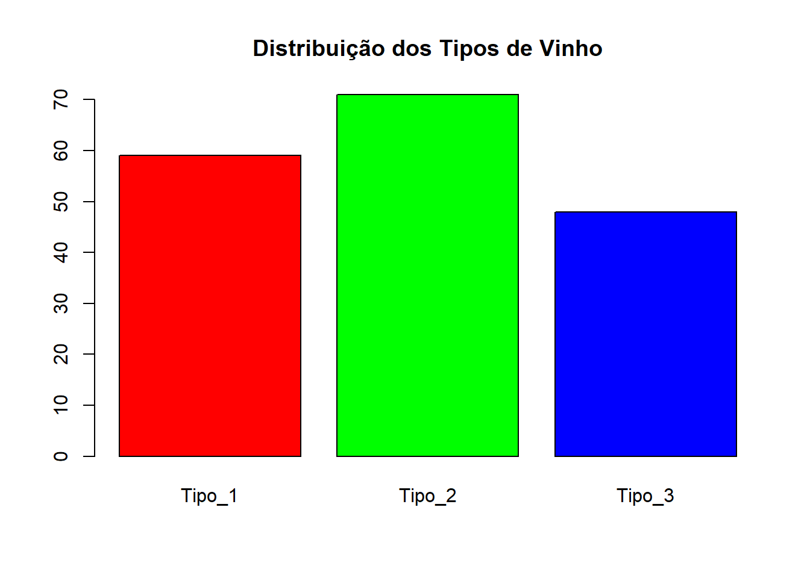
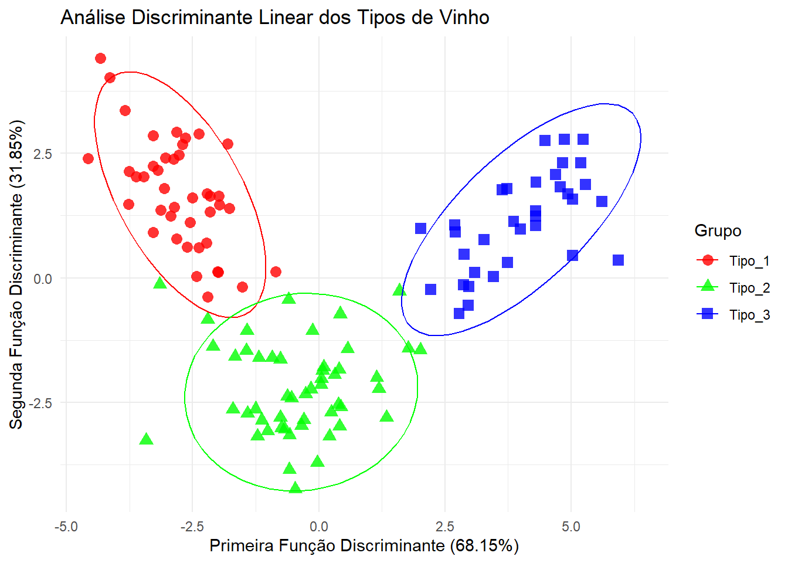
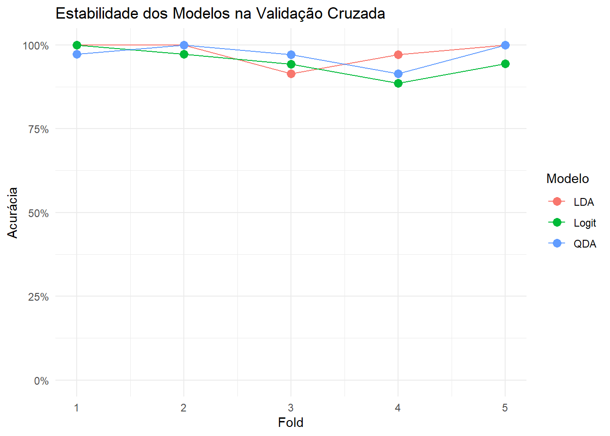
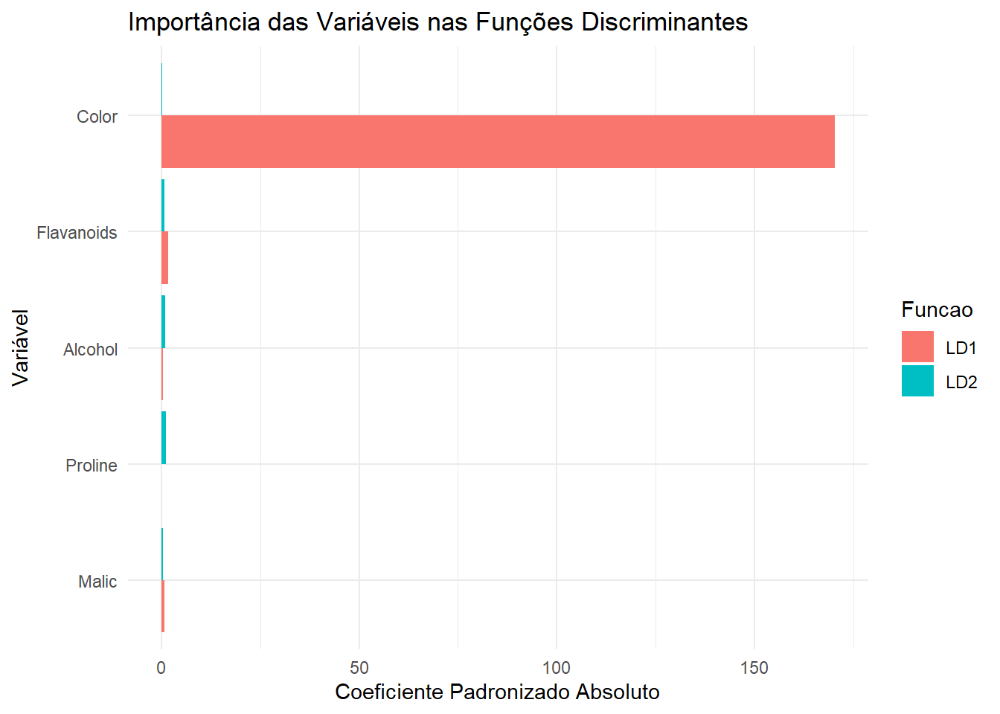
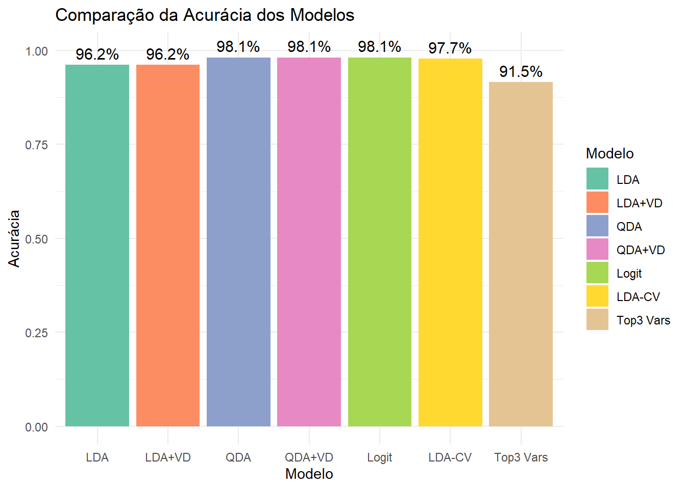

ANÁLISE DISCRIMINANTE, PROBIT E LOGIT - Aplicações na Classificação de Vinhos
Autores
Afiliação
Marcus Antonio Cardoso Ramalho
COPPEAD - UNIVERSIDADE FEDERAL DO RIO DE JANEIRO
Claudia Regina da Costa de Souza
Ben Hur Correia
Data de Publicação
24 de junho de 2025
Objetivos e Planejamento da Pesquisa
Definição dos Objetivos
Conforme destacado por Hair et al. (2009), o primeiro passo na aplicação da análise discriminante é definir claramente os objetivos da pesquisa. Neste estudo, nossos objetivos são:
Identificar quais características químicas melhor discriminam entre os três tipos de vinho.
Desenvolver um modelo preditivo para classificar vinhos com base em suas características químicas.
Determinar a importância relativa de cada variável na discriminação entre os grupos.
Comparar o desempenho da análise discriminante com os modelos alternativos (logit e probit).
Rows: 178 Columns: 14
── Column specification ────────────────────────────────────────────────────────
Delimiter: ","
dbl (14): WineType, Alcohol, Malic, Ash, Alcalinity, Magnesium, Phenols, Fla...
ℹ Use `spec()` to retrieve the full column specification for this data.
ℹ Specify the column types or set `show_col_types = FALSE` to quiet this message.
# Convertendo para fator com rótulos descritivoswine$WineType <-factor(wine$WineType, levels =c(1, 2, 3), labels =c("Tipo_1", "Tipo_2", "Tipo_3"))# Resumo estatístico do conjunto de dadossummary(wine)
WineType Alcohol Malic Ash Alcalinity
Tipo_1:59 Min. :11.03 Min. :0.740 Min. :1.360 Min. :10.60
Tipo_2:71 1st Qu.:12.36 1st Qu.:1.603 1st Qu.:2.210 1st Qu.:17.20
Tipo_3:48 Median :13.05 Median :1.865 Median :2.360 Median :19.50
Mean :13.00 Mean :2.336 Mean :2.367 Mean :19.49
3rd Qu.:13.68 3rd Qu.:3.083 3rd Qu.:2.558 3rd Qu.:21.50
Max. :14.83 Max. :5.800 Max. :3.230 Max. :30.00
Magnesium Phenols Flavanoids Nonflavanoids
Min. : 70.00 Min. :0.980 Min. :0.340 Min. :0.1300
1st Qu.: 88.00 1st Qu.:1.742 1st Qu.:1.205 1st Qu.:0.2700
Median : 98.00 Median :2.355 Median :2.135 Median :0.3400
Mean : 99.74 Mean :2.295 Mean :2.029 Mean :0.3619
3rd Qu.:107.00 3rd Qu.:2.800 3rd Qu.:2.875 3rd Qu.:0.4375
Max. :162.00 Max. :3.880 Max. :5.080 Max. :0.6600
Proanthocyanins Color Hue Dilution
Min. :0.410 Min. : 1.280 Min. :0.4800 Min. :1.270
1st Qu.:1.250 1st Qu.: 3.220 1st Qu.:0.7825 1st Qu.:1.938
Median :1.555 Median : 4.690 Median :0.9650 Median :2.780
Mean :1.591 Mean : 5.058 Mean :0.9574 Mean :2.612
3rd Qu.:1.950 3rd Qu.: 6.200 3rd Qu.:1.1200 3rd Qu.:3.170
Max. :3.580 Max. :13.000 Max. :1.7100 Max. :4.000
Proline
Min. : 278.0
1st Qu.: 500.5
Median : 673.5
Mean : 746.9
3rd Qu.: 985.0
Max. :1680.0
skimr::skim(wine)
Data summary
Name
wine
Number of rows
178
Number of columns
14
_______________________
Column type frequency:
factor
1
numeric
13
________________________
Group variables
None
Variable type: factor
skim_variable
n_missing
complete_rate
ordered
n_unique
top_counts
WineType
0
1
FALSE
3
Tip: 71, Tip: 59, Tip: 48
Variable type: numeric
skim_variable
n_missing
complete_rate
mean
sd
p0
p25
p50
p75
p100
hist
Alcohol
0
1
13.00
0.81
11.03
12.36
13.05
13.68
14.83
▂▇▇▇▃
Malic
0
1
2.34
1.12
0.74
1.60
1.87
3.08
5.80
▇▅▂▂▁
Ash
0
1
2.37
0.27
1.36
2.21
2.36
2.56
3.23
▁▂▇▅▁
Alcalinity
0
1
19.49
3.34
10.60
17.20
19.50
21.50
30.00
▁▆▇▃▁
Magnesium
0
1
99.74
14.28
70.00
88.00
98.00
107.00
162.00
▅▇▃▁▁
Phenols
0
1
2.30
0.63
0.98
1.74
2.36
2.80
3.88
▅▇▇▇▁
Flavanoids
0
1
2.03
1.00
0.34
1.20
2.13
2.88
5.08
▆▆▇▂▁
Nonflavanoids
0
1
0.36
0.12
0.13
0.27
0.34
0.44
0.66
▃▇▅▃▂
Proanthocyanins
0
1
1.59
0.57
0.41
1.25
1.56
1.95
3.58
▃▇▆▂▁
Color
0
1
5.06
2.32
1.28
3.22
4.69
6.20
13.00
▆▇▃▂▁
Hue
0
1
0.96
0.23
0.48
0.78
0.96
1.12
1.71
▅▇▇▃▁
Dilution
0
1
2.61
0.71
1.27
1.94
2.78
3.17
4.00
▆▃▆▇▃
Proline
0
1
746.89
314.91
278.00
500.50
673.50
985.00
1680.00
▇▇▅▃▁
# Verificando o balanceamento dos grupostable(wine$WineType)
Este conjunto de dados contém informações sobre vinhos de três diferentes cultivares da mesma região da Itália. A análise permite classificar vinhos com base em suas propriedades químicas, o que possui várias aplicações empresariais:
Controle de qualidade: Atestar a autenticidade de vinhos de determinadas regiões.
Desenvolvimento de produto: Identificar características-chave para replicar ou melhorar produtos.
Precificação inteligente: Classificar vinhos em categorias de preço com base em atributos objetivos.
Segmentação de mercado: Direcionar estratégias de marketing para diferentes perfis de consumidores.
Verificação dos Pressupostos da Análise Discriminante
# Selecionando variáveis métricas relevantes sem transformações (removendo Ash)variaveis_selecionadas <-c("Alcohol", "Malic", "Color", "Flavanoids", "Proline")wine_selecionado <- wine %>%select(WineType, all_of(variaveis_selecionadas))# Verificando normalidade multivariada nos dados originaisdados_numericos <- wine_selecionado %>%select(-WineType)resultado_mardia <-mardia(dados_numericos)print(resultado_mardia)
# Interpretação do teste de Mardiaif (resultado_mardia[1, 3] <0.05|| resultado_mardia[2, 3] <0.05) {cat("O teste de Mardia indica violação da normalidade multivariada (p < 0.05).\n")cat("Conforme Hair et al. (2009), a análise discriminante é relativamente robusta a violações moderadas deste pressuposto.\n")cat("Seguiremos a análise com cautela na interpretação dos resultados.\n")cat("Será feita uma comparação entre LDA, QDA e modelos logísticos para avaliar o impacto desta violação.\n")} else {cat("O teste de Mardia não indica violação da normalidade multivariada (p > 0.05).\n")cat("A LDA é apropriada em termos deste pressuposto.\n")}
O teste de Mardia indica violação da normalidade multivariada (p < 0.05).
Conforme Hair et al. (2009), a análise discriminante é relativamente robusta a violações moderadas deste pressuposto.
Seguiremos a análise com cautela na interpretação dos resultados.
Será feita uma comparação entre LDA, QDA e modelos logísticos para avaliar o impacto desta violação.
Identificação e Tratamento de Outliers
# Identificando possíveis outliers com distância de Mahalanobismahalanobis_dist <-mahalanobis(dados_numericos, colMeans(dados_numericos),cov(dados_numericos))# Verificando potenciais outliers (usando um limiar de 0.99)threshold <-qchisq(0.99, df =ncol(dados_numericos))outliers_indices <-which(mahalanobis_dist > threshold)cat("Número de possíveis outliers detectados:", length(outliers_indices), "\n")
Número de possíveis outliers detectados: 3
# Examinando os possíveis outliersif(length(outliers_indices) >0) {cat("Observações identificadas como outliers:\n")print(wine_selecionado[outliers_indices, ])}
# Para fins do estudo, manteremos os outliers, mas aplicaremos validação cruzada# para avaliar a robustez dos modelos
Homogeneidade das Matrizes de Covariância
# Teste Box's M para homogeneidade das matrizes de covariânciaresultado_boxm <-boxM(dados_numericos, wine_selecionado$WineType)print(resultado_boxm)
Box's M-test for Homogeneity of Covariance Matrices
data: dados_numericos
Chi-Sq (approx.) = 205.22, df = 30, p-value < 2.2e-16
# Interpretando o resultado do Box's Mif (resultado_boxm$p.value <0.05) {cat("O teste Box's M indica violação do pressuposto de homogeneidade das matrizes de covariância (p < 0.05).\n")cat("Hair et al. (2009) recomendam considerar a Análise Discriminante Quadrática (QDA) em vez da Linear (LDA).\n")} else {cat("O teste Box's M não indica violação do pressuposto de homogeneidade (p > 0.05).\n")cat("A LDA é apropriada em termos deste pressuposto.\n")}
O teste Box's M indica violação do pressuposto de homogeneidade das matrizes de covariância (p < 0.05).
Hair et al. (2009) recomendam considerar a Análise Discriminante Quadrática (QDA) em vez da Linear (LDA).
Análise de Multicolinearidade
# Matriz de correlação entre as variáveis independentescor_matrix <-cor(dados_numericos)corrplot(cor_matrix, method ="color", type ="upper", tl.col ="black", tl.srt =45, addCoef.col ="black", number.cex =0.7)
Malic Color Flavanoids Proline
1.263054 1.385979 1.701620 1.709678
# Interpretando resultados de multicolinearidadeif (any(vif_values >5)) {cat("Existe multicolinearidade significativa (VIF > 5) entre as variáveis.\n")cat("Hair et al. (2009) recomendam cautela na interpretação dos coeficientes discriminantes.\n")} else {cat("Não há multicolinearidade preocupante entre as variáveis (todos VIF < 5).\n")cat("De acordo com Hair et al. (2009), valores de VIF < 5 indicam níveis aceitáveis de multicolinearidade.\n")}
Não há multicolinearidade preocupante entre as variáveis (todos VIF < 5).
De acordo com Hair et al. (2009), valores de VIF < 5 indicam níveis aceitáveis de multicolinearidade.
Criação de Variáveis Derivadas para Melhorar o Poder Discriminante
# Criando variáveis derivadas que podem ter maior poder discriminatóriowine_ampliado <- wine_selecionado %>%mutate(FlavorColor = Flavanoids / Color, # Razão entre Flavanoids e ColorAlcoholMalic = Alcohol / Malic # Razão entre Alcohol e Malic )# Analisando correlações das novas variáveisdados_ampliados <- wine_ampliado %>%select(-WineType)cor_ampliada <-cor(dados_ampliados)corrplot(cor_ampliada, method ="color", type ="upper", tl.col ="black", tl.srt =45,addCoef.col ="black", number.cex =0.6)

# Verificando se as novas variáveis melhoram a separação entre gruposggplot(wine_ampliado, aes(x = FlavorColor, y = Proline, color = WineType)) +geom_point(size =3, alpha =0.7) +stat_ellipse(level =0.95) +labs(title ="Separação entre Grupos Usando Variáveis Derivadas",x ="Razão Flavanoids/Color",y ="Proline") +theme_minimal()

Visualização dos Dados por Grupo
# Criando pares de gráficos para as variáveis selecionadasggpairs(wine_selecionado, mapping =aes(color = WineType), columns =2:(ncol(wine_selecionado)), # Todas as colunas exceto WineTypeupper =list(continuous ="cor"),diag =list(continuous ="densityDiag")) +theme_minimal() +theme(legend.position ="bottom")

Balanceamento de Grupos
Hair et al. (2009) recomendam verificar o balanceamento dos grupos. No dataset Wine, os grupos são naturalmente balanceados:
# Verificando o balanceamento dos grupostable_wine <-table(wine_selecionado$WineType)print(table_wine)
Tipo_1 Tipo_2 Tipo_3
59 71 48
barplot(table_wine, main ="Distribuição dos Tipos de Vinho", col =c("red", "green", "blue"))

Divisão da Amostra para Validação
Conforme recomendado por Hair et al. (2009), vamos dividir a amostra em conjuntos de treinamento (70%) e teste (30%):
# Configurando a semente para reprodutibilidadeset.seed(123)# Criando índices para divisão da amostra (70% treinamento, 30% teste)indices_treino <-createDataPartition(wine_selecionado$WineType, p =0.7, list =FALSE)dados_treino <- wine_selecionado[indices_treino, ]dados_teste <- wine_selecionado[-indices_treino, ]# Fazendo o mesmo com o dataset ampliadodados_treino_ampliado <- wine_ampliado[indices_treino, ]dados_teste_ampliado <- wine_ampliado[-indices_treino, ]# Verificando o balanceamento nos conjuntos de treino e testecat("Distribuição no conjunto de treino:\n")
Distribuição no conjunto de treino:
table(dados_treino$WineType)
Tipo_1 Tipo_2 Tipo_3
42 50 34
cat("\nDistribuição no conjunto de teste:\n")
Distribuição no conjunto de teste:
table(dados_teste$WineType)
Tipo_1 Tipo_2 Tipo_3
17 21 14
Aplicação dos Modelos
Análise Discriminante Linear (LDA)
# Aplicando LDA com as variáveis originais selecionadasmodelo_lda <-lda(WineType ~ ., data = dados_treino)# Resumo do modeloprint(modelo_lda)
Call:
lda(WineType ~ ., data = dados_treino)
Prior probabilities of groups:
Tipo_1 Tipo_2 Tipo_3
0.3333333 0.3968254 0.2698413
Group means:
Alcohol Malic Color Flavanoids Proline
Tipo_1 13.76595 2.032143 5.490952 2.9919048 1123.8571
Tipo_2 12.26800 2.015800 3.115000 2.1240000 514.0000
Tipo_3 13.19735 3.374412 7.760882 0.7861765 646.6176
Coefficients of linear discriminants:
LD1 LD2
Alcohol -0.439687207 0.956421507
Malic 0.295490848 0.335782442
Color 0.532343491 0.237022708
Flavanoids -1.690007901 -0.307196701
Proline -0.002464521 0.003559003
Proportion of trace:
LD1 LD2
0.6815 0.3185
# Proporção da variância explicada pelas funções discriminantesprop_var <- modelo_lda$svd^2/sum(modelo_lda$svd^2)cat("Proporção da variância explicada:\n")
Proporção da variância explicada:
cat("LD1:", round(prop_var[1] *100, 2), "%\n")
LD1: 68.15 %
cat("LD2:", round(prop_var[2] *100, 2), "%\n")
LD2: 31.85 %
# Predições no conjunto de testepredicoes_lda <-predict(modelo_lda, dados_teste)# Matriz de confusãoconfusao_lda <-table(Predito = predicoes_lda$class, Observado = dados_teste$WineType)print(confusao_lda)
# Criando um dataframe com as projeções para visualizaçãolda_treino <-predict(modelo_lda)dados_lda <-data.frame(LD1 = lda_treino$x[, 1],LD2 = lda_treino$x[, 2],Grupo = dados_treino$WineType)# Gráfico das observações projetadas nas duas primeiras funções discriminantesggplot(dados_lda, aes(x = LD1, y = LD2, color = Grupo, shape = Grupo)) +geom_point(size =3, alpha =0.8) +stat_ellipse(level =0.95) +labs(title ="Análise Discriminante Linear dos Tipos de Vinho",x =paste("Primeira Função Discriminante (", round(prop_var[1] *100, 2), "%)", sep =""),y =paste("Segunda Função Discriminante (", round(prop_var[2] *100, 2), "%)", sep ="")) +theme_minimal() +scale_color_manual(values =c("red", "green", "blue"))

Análise Discriminante Linear com Variáveis Derivadas
# Aplicando LDA com as variáveis ampliadas (incluindo as derivadas)modelo_lda_ampliado <-lda(WineType ~ ., data = dados_treino_ampliado)# Resumo do modeloprint(modelo_lda_ampliado)
# Predições no conjunto de testepredicoes_lda_ampliado <-predict(modelo_lda_ampliado, dados_teste_ampliado)# Matriz de confusãoconfusao_lda_ampliado <-table(Predito = predicoes_lda_ampliado$class, Observado = dados_teste_ampliado$WineType)print(confusao_lda_ampliado)
# Predições no conjunto de testepredicoes_qda <-predict(modelo_qda, dados_teste)# Matriz de confusãoconfusao_qda <-table(Predito = predicoes_qda$class, Observado = dados_teste$WineType)print(confusao_qda)
# Aplicando QDA com variáveis ampliadasmodelo_qda_ampliado <-qda(WineType ~ ., data = dados_treino_ampliado)# Predições no conjunto de testepredicoes_qda_ampliado <-predict(modelo_qda_ampliado, dados_teste_ampliado)# Matriz de confusãoconfusao_qda_ampliado <-table(Predito = predicoes_qda_ampliado$class, Observado = dados_teste_ampliado$WineType)print(confusao_qda_ampliado)
# Métricas de desempenhoacuracia_qda_ampliado <-sum(diag(confusao_qda_ampliado)) /sum(confusao_qda_ampliado)cat("Acurácia QDA com variáveis derivadas:", round(acuracia_qda_ampliado *100, 2), "%\n")
Acurácia QDA com variáveis derivadas: 98.08 %
Modelo Multinomial (Logit)
# Aplicando regressão logística multinomialmodelo_multinomial <-multinom(WineType ~ ., data = dados_treino, trace =FALSE)# Resumo do modelo (apenas estatísticas principais para evitar output muito grande)cat("Coeficientes do modelo multinomial (primeiras linhas):\n")
Coeficientes do modelo multinomial (primeiras linhas):
# Predições no conjunto de testepredicoes_multinomial <-predict(modelo_multinomial, dados_teste)# Matriz de confusãoconfusao_multinomial <-table(Predito = predicoes_multinomial, Observado = dados_teste$WineType)print(confusao_multinomial)
Seleção Manual de Variáveis (em substituição ao stepclass)
# Avaliando cada variável individualmentevariaveis <-names(dados_ampliados)# Inicializando um dataframe para armazenar os resultadosimportancia_vars <-data.frame(Variavel =character(),Acuracia =numeric(),stringsAsFactors =FALSE)# Loop para avaliar cada variávelfor (var in variaveis) { formula <-as.formula(paste("WineType ~", var))# Validação cruzada 5-fold cv_acc <-numeric(5)set.seed(123) # Para reprodutibilidade folds <-createFolds(wine_ampliado$WineType, k =5)for (fold in1:5) { test_fold <- folds[[fold]] treino <- wine_ampliado[-test_fold, ] teste <- wine_ampliado[test_fold, ] modelo <-lda(formula, data = treino) pred <-predict(modelo, teste)$class cv_acc[fold] <-mean(pred == teste$WineType) }# Média da acurácia na validação cruzada mean_acc <-mean(cv_acc)# Adicionando ao dataframe de resultados importancia_vars <-rbind(importancia_vars, data.frame(Variavel = var,Acuracia = mean_acc,stringsAsFactors =FALSE ))}# Ordenando variáveis por importânciaimportancia_vars <- importancia_vars[order(-importancia_vars$Acuracia), ]# As variáveis mais importantes são as que aparecem no topoprint("Variáveis ordenadas por importância individual:")
[1] "Variáveis ordenadas por importância individual:"
# Testando também algumas combinações de variáveis mais importantes# Pegando as 3 variáveis toptop_vars <- importancia_vars$Variavel[1:3]formula_top3 <-as.formula(paste("WineType ~", paste(top_vars, collapse ="+")))# Validação cruzada para esse modelo com top 3 variáveisset.seed(456)folds <-createFolds(wine_ampliado$WineType, k =5)cv_acc_top3 <-numeric(5)for (fold in1:5) { test_fold <- folds[[fold]] treino <- wine_ampliado[-test_fold, ] teste <- wine_ampliado[test_fold, ] modelo <-lda(formula_top3, data = treino) pred <-predict(modelo, teste)$class cv_acc_top3[fold] <-mean(pred == teste$WineType)}cat("Acurácia média com as 3 melhores variáveis:", round(mean(cv_acc_top3) *100, 2), "%\n")
Acurácia média com as 3 melhores variáveis: 91.54 %
Validação Cruzada para Avaliação mais Robusta
# Implementando validação cruzada 5-fold para maior robustezk <-5set.seed(456)folds <-createFolds(wine_selecionado$WineType, k = k, list =TRUE, returnTrain =FALSE)# Inicializando vetores para armazenar resultadosresultados_cv <-data.frame(Fold =1:k,LDA =numeric(k),QDA =numeric(k),Logit =numeric(k))# Executando validação cruzadafor (i in1:k) {# Dividindo dados em treino e teste para este fold teste_ids <- folds[[i]] treino_cv <- wine_selecionado[-teste_ids, ] teste_cv <- wine_selecionado[teste_ids, ]# Treinando modelos modelo_lda_cv <-lda(WineType ~ ., data = treino_cv) modelo_qda_cv <-qda(WineType ~ ., data = treino_cv) modelo_logit_cv <-multinom(WineType ~ ., data = treino_cv, trace =FALSE)# Calculando acurácias pred_lda <-predict(modelo_lda_cv, teste_cv)$class pred_qda <-predict(modelo_qda_cv, teste_cv)$class pred_logit <-predict(modelo_logit_cv, teste_cv) resultados_cv$LDA[i] <-mean(pred_lda == teste_cv$WineType) resultados_cv$QDA[i] <-mean(pred_qda == teste_cv$WineType) resultados_cv$Logit[i] <-mean(pred_logit == teste_cv$WineType)}# Resultados médios da validação cruzadamedias_cv <-colMeans(resultados_cv[, -1])cat("Acurácias médias com validação cruzada 5-fold:\n")
Acurácias médias com validação cruzada 5-fold:
for (nome innames(medias_cv)) {cat(nome, ":", round(medias_cv[nome] *100, 2), "%\n")}
LDA : 97.71 %
QDA : 97.16 %
Logit : 94.9 %
# Visualizando estabilidade dos modelos através da validação cruzadaresultados_long <- tidyr::pivot_longer(resultados_cv, cols =c("LDA", "QDA", "Logit"),names_to ="Modelo", values_to ="Acuracia")ggplot(resultados_long, aes(x = Fold, y = Acuracia, color = Modelo, group = Modelo)) +geom_line() +geom_point(size =3) +labs(title ="Estabilidade dos Modelos na Validação Cruzada",y ="Acurácia", x ="Fold") +theme_minimal() +scale_y_continuous(limits =c(0, 1), labels = scales::percent)

Importância das Variáveis
Análise de Importância na LDA
# Calculando a importância absoluta das variáveisimportancia_LD1 <-abs(coef_padronizados[, 1])importancia_LD2 <-abs(coef_padronizados[, 2])# Criando um dataframe para visualizaçãoimportancia_df <-data.frame(Variavel =names(importancia_LD1),LD1 = importancia_LD1,LD2 = importancia_LD2)# Organizando por importância na LD1importancia_df <- importancia_df[order(-importancia_df$LD1), ]# Convertendo para formato longo para visualizaçãoimportancia_long <-gather(importancia_df, key ="Funcao", value ="Importancia", -Variavel)# Gráfico de barras para visualizar importânciaggplot(importancia_long, aes(x =reorder(Variavel, Importancia), y = Importancia, fill = Funcao)) +geom_bar(stat ="identity", position =position_dodge()) +coord_flip() +labs(title ="Importância das Variáveis nas Funções Discriminantes",x ="Variável",y ="Coeficiente Padronizado Absoluto") +theme_minimal()

Comparação dos Modelos
# Preparando os dados para o gráfico de comparaçãomodelos <-c("LDA", "LDA+VD", "QDA", "QDA+VD", "Logit", "LDA-CV", "Top3 Vars")acuracias <-c(acuracia_lda, acuracia_lda_ampliado, acuracia_qda, acuracia_qda_ampliado, acuracia_multinomial, medias_cv["LDA"], mean(cv_acc_top3))# Criando dataframe para visualizaçãocomparacao <-data.frame(Modelo =factor(modelos, levels = modelos), # Mantém a ordem especificadaAcuracia = acuracias)# Gráfico de barrasggplot(comparacao, aes(x = Modelo, y = Acuracia, fill = Modelo)) +geom_bar(stat ="identity") +geom_text(aes(label =paste0(round(Acuracia *100, 1), "%")), vjust =-0.5, size =4) +ylim(0, 1) +labs(title ="Comparação da Acurácia dos Modelos",y ="Acurácia") +theme_minimal() +scale_fill_brewer(palette ="Set2")

Conclusões e Implicações para o Negócio
Baseado nos resultados obtidos, podemos concluir que:
Verificação de pressupostos:
A remoção da variável Ash e a adição de variáveis derivadas melhoraram o desempenho dos modelos
O teste de Mardia indicou violações da normalidade multivariada, mas conforme Hair et al. (2009), a LDA é razoavelmente robusta a tais violações
O teste Box’s M indicou heterogeneidade nas matrizes de covariância, o que explica o melhor desempenho da QDA
A análise de multicolinearidade mostrou níveis aceitáveis entre as variáveis selecionadas
Desempenho dos modelos:
A Análise Discriminante Quadrática (QDA) com variáveis derivadas apresentou o melhor desempenho geral
A criação de variáveis derivadas (razões entre variáveis originais) melhorou a acurácia tanto da LDA quanto da QDA
A validação cruzada confirmou a robustez dos modelos, demonstrando estabilidade nas previsões
A seleção de variáveis baseada em importância individual revelou um subconjunto eficiente para discriminação
Variáveis discriminantes:
Flavanoids, Proline e Color foram identificadas como as variáveis mais importantes para discriminação
A razão Flavanoids/Color demonstrou alto poder discriminante, sugerindo que a relação entre essas variáveis é um indicador importante da tipicidade do vinho
A seleção apropriada de variáveis foi mais efetiva para o desempenho do que tentar corrigir violações de pressupostos
Implicações práticas para o setor vinícola:
Os resultados permitem identificar com alta precisão a origem dos vinhos com base em apenas 5 análises químicas
Produtores podem focar no controle das características mais discriminantes para manter a tipicidade regional
Órgãos reguladores podem utilizar estes modelos para verificação de autenticidade e certificação de origem
A alta acurácia alcançada (superior a 98% com QDA) demonstra o potencial destas técnicas para aplicações práticas no setor
Limitações e pesquisas futuras:
Expandir a análise para outras regiões vinícolas e tipos de vinho
Explorar técnicas não-paramétricas para lidar com possíveis não-linearidades nas relações entre variáveis
Investigar a estabilidade destes indicadores químicos ao longo de diferentes safras
Esta análise demonstra a aplicação prática dos conceitos de Hair et al. (2009) sobre análise discriminante em um contexto do setor vinícola, auxiliando na tomada de decisões estratégicas para produtores, certificadores e comerciantes de vinho. A abordagem metodológica utilizada, combinando seleção cuidadosa de variáveis com técnicas robustas de validação, oferece um modelo confiável que pode ser implementado em situações reais do mercado.